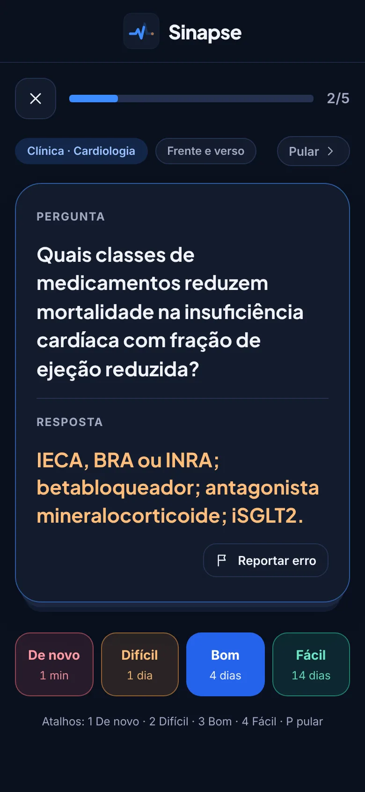
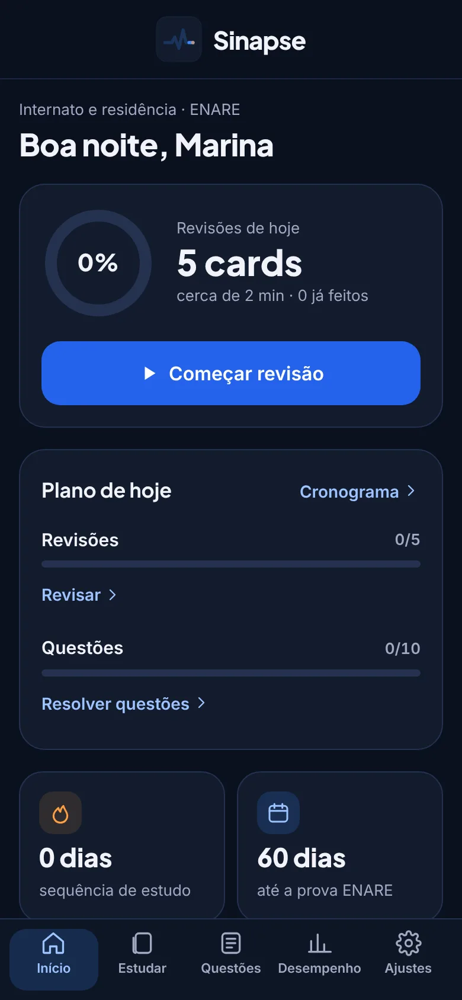
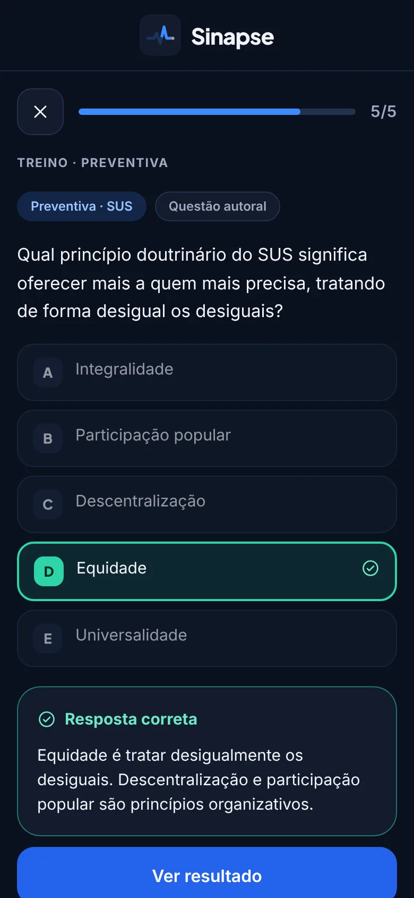

Android
Seu aparelho- Abra esta página no Chrome.
- Toque no menu ⋮ no canto de cima.
- Toque em Instalar app ou Adicionar à tela inicial.
Funciona no Android 9 ou mais novo.
Flashcards de medicina
Repetição espaçada, questões no estilo de residência, simulados e um cronograma que se ajusta até o dia da prova. Do 1º período à residência.
Funciona no Android, no iPhone e no computador.

O Sinapse é instalado direto por aqui, sem loja. Ele fica na tela inicial com ícone próprio, abre em tela cheia e funciona sem internet.
O Sinapse já está instalado neste aparelho. Abrir o app.
Funciona no Android 9 ou mais novo.
No iOS 16.4 ou mais novo também funciona pelo Chrome, no mesmo botão Compartilhar.
Aponte a câmera do celular para o código e siga os passos do seu aparelho. Para estudar no computador, use o Sinapse direto no navegador; no Chrome e no Edge também dá para instalar pelo ícone de instalação na barra de endereço.
O algoritmo FSRS calcula o dia certo de rever cada card, para você estudar menos e lembrar mais.
Nas lacunas você escreve antes de ver. O app aceita sinônimos, ignora acentos e sugere a nota.
Treino por área com comentário e simulado cronometrado no ritmo da prova, com gabarito por grande área.
Toda questão errada vira um card com o conceito que faltou, e sai do caderno quando você acerta.
Informe a data e o app distribui o conteúdo, reserva a reta final para revisão e mostra onde focar.
Entre com o Google para salvar o progresso e usar em vários aparelhos. Proteja com digital ou Face ID.


O Sinapse está em fase de testes, com acesso liberado. Em breve o acesso será por assinatura, com login na sua conta Google e planos para cada fase do curso.
O Sinapse é instalado direto pelo navegador, sem loja. Ele funciona como um app comum: ícone na tela inicial, tela cheia e uso sem internet. As versões nas lojas podem vir depois.
Só para entrar com a conta e sincronizar. As revisões funcionam sem internet, e o progresso é enviado quando a conexão voltar.
O progresso fica salvo na sua conta Google, e cada pessoa só acessa os próprios dados. Veja os Termos e a Política de Privacidade.
Ele se atualiza sozinho quando você abre. Em Ajustes há o botão "Buscar atualização" para forçar.
Não. O Sinapse é uma ferramenta de estudo e não substitui fontes oficiais nem o julgamento clínico.